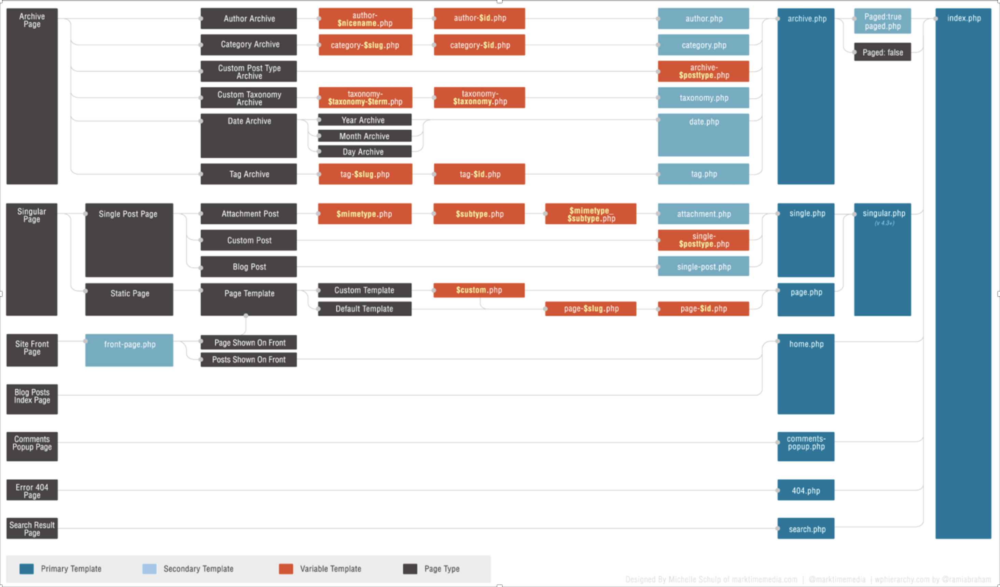

Mes missions
Mes missions
Ma première charge de travail consistait en une mission de préparation, c'est-à-dire lire la documentation de l’entreprise et apprendre son fonctionnement.
Mon tuteur m’a envoyé plusieurs liens de vidéo tutoriel pour que j’intègre les technologies utilisées par l’entreprise. J’ai commencé par créer une « to do liste » sur un outil de productivité : Notion.
Je l’ai ensuite partagé avec mon tuteur pour qu’il puisse suivre mon avancement. Pour chaque tutoriel, je me suis créé des exercices pour mettre en application ce que j’avais appris. Pour le Scss et tailwindcss, j’ai créé un petit projet, un formulaire d’inscription responsive, en utilisant séparément tailwindcss puis du scss pour finir avec l’utilisation des deux en même temps. Ensuite, un autre projet qui reprenait l’utilisation des deux.
J’ai révisé l’utilisation de la console et de git, puis des notions de PHP et de blade pour avoir des bases et mieux appréhender les futurs projets.
Ma première implication dans un projet professionnel que j’ai pris en cours de route, consistait à créer un site intranet rpl (Région pays de la Loire). j’ai fait la connaissance de mon équipe composée de Johnny le Chef de Projet et d’Amy et Camille deux développeurs qui m’ont mis à l’aise et suivi durant ce parcours créatif. J’ai appris ce qu’était le fonctionnement du MVC (Model View Controller) une méthode qui permet de structurer son code entre la view = le visuel en front, le controller : qui fait la transition entre la view et le model et qui vérifie ses informations et le model qui permet de récupérer les informations, le découpage atomique, c’est une méthode conception qui consiste à classer les éléments dans différents groupes ( Atom / molécule / composant etc … ). Puis, j’ai compris comment un développeur utilise wordpress, ce n’est plus un logiciel à télécharger mais une dépendance qui nous permet de profiter du back office de celui-ci tout en utilisant un thème customisable qui sert de base à la création d’un site. Cela m’a fait changer d’avis sur wordpress.
Mes premières tâches ont consisté à préparer les Atomes ; ce qui correspond au plus petit composant du site comme par exemple des boutons. Puis, j’ai fait des champs acf (Advanced Custom Fields) ce sont les champs qui apparaissent et sont contribuables dans le BO wordpress et des cpt (Custom post type) qui sont des types de contenu visible dans le menu latéral du back office. Et j’ai commencé à appréhender le Schéma de Wordpress.
Pour démarrer, je faisais des petites tâches qui concernaient surtout le Front, tâches qui ont évoluées de manière plus conséquentes et compliquées. Ma progression s’est faite en douceur et m’a permis d’appréhender le milieu du développement web sans en avoir peur et sans pression. Dès le début, j’ai eu la confiance de mes collègues, tout ce que je pouvais faire était considéré comme un plus. C’est moi-même qui ait voulu m’impliquer davantage. J’ai rapidement exécuté des tâches équivalentes à celle de mes collègues développeurs en mettant beaucoup plus de temps qu’eux cela dit. Avant la fin du projet, j’ai été désigné, pour faire partie d'une équipe en charge d'un nouveau projet.
Avec cette responsabilité, pour m’accompagner, il y avait Nassim un développeur avec qui j'ai beaucoup appris. Nous avons testé une nouvelle méthodologie de travail qui consistait à diviser les cartes par fonctionnalités, une carte peut donc correspondre à la création de plusieurs éléments, et à faire des points très réguliers avec le client et de livrer par fonctionnalités. J’ai donc appris ce qu’est un Sprint Zéro et son importance.
Le projet consiste à transformer le site produit-locaux.bzh en un multisite qui soit en fonction des EPCI (ensemble de communes) pour que sur chaque site du multisite, les producteurs soient mis en avant, en fonction de leur secteur et donc rattaché à un EPCI. Il sera possible d’ajouter un calendrier de saisons et un carnet de recettes au site, qui mettra en avant différents producteurs via les EPCI auxquels ils sont rattachés.
Avec ce sprint zero, nous nous sommes renseignés sur le fonctionnement et la création de plugin wordpress et avons commencé à créer des schémas fonctionnels sur les différentes fonctionnalités du site.
Apres avoir commencé le sprint zéro, le projet à était interrompu pour cause de soucis avec le client. Je suis donc revenu sur Intranet rpl pour m’occuper de l’accessibilité du site. Cela consiste à suivre une charte de règles et un bon procédé lors d’un développement afin que le site soit accessible par un maximum de personne handicapée ou non. J'ai découvert et mis en place énormément de principes vus avec OPQUAST, la notion de screen reader, l’accessibilité au clavier etc …